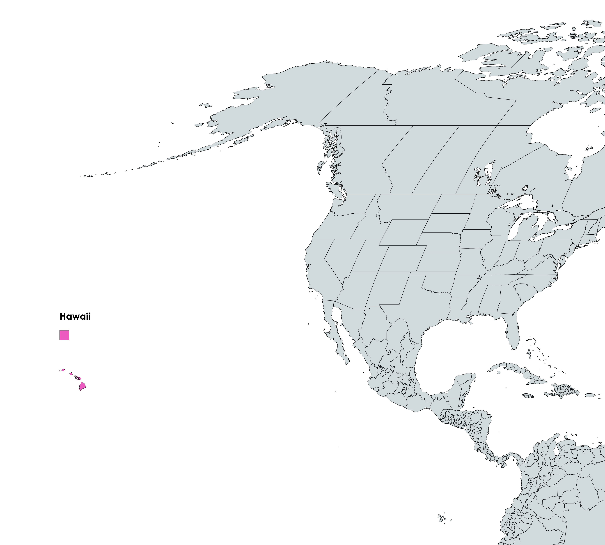

Hawaii in het kort
Hawaï is een eilandengroep in de Stille Oceaan en maakt deel uit van de Verenigde Staten. Het is de meest afgelegen staat van het land en ligt ongeveer 3.700 kilometer ten zuidwesten van Californië. De archipel bestaat uit 137 eilanden, waarvan er acht grote bewoonde eilanden zijn, zoals Oahu, Maui, Big Island (Hawaï-eiland) en Kauai. De eilanden zijn beroemd om hun spectaculaire natuur, variërend van vulkanische landschappen en tropische regenwouden tot witte zandstranden en kristalhelder water. Het klimaat is tropisch, met aangename temperaturen het hele jaar door, wat het een populaire bestemming maakt voor toeristen. Hawaï is ook bekend om zijn rijke flora en fauna, waarvan veel soorten nergens anders ter wereld voorkomen.
 Ontdek meer over Hawaii